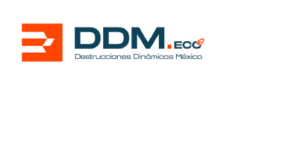

Administradores Ambientales
Seguiremos cargando en segundo plano...
Nuestra familia está comprometida a fomentar los valores que nos permiten crecer en nuestra política de mejora continua, filosofía que ha llevado a Administradores Ambientales a generar conciencia y responsabilidad en los ámbitos social, laboral y ambiental.
Convertirnos en una gran solución integral en materia de manejo de residuos para nuestros clientes, respaldado de un servicio a la medida y con proyección de mejora continua, coadyubando a tener un planeta más próspero.
Contribuir al cuidado del medio ambiente a través de una recolección ordenada, destrucción adecuada y reciclaje responsable de los residuos que restan espacios en nuestro día a día; fortalecemos el aprovechar y reutilizar, gestionando un servicio a nuestros clientes de primera clase”
Consta de la destrucción total de las mercancías y/o productos terminados que ya no pueden salir al mercado por distintos casos
Nuestro servicio de reciclado de desperdicios se enfoca en transformar los materiales que ya no necesitas en recursos valiosos. A través de procesos innovadores y responsables, garantizamos que tus residuos sean gestionados de manera eficiente, reduciendo la huella ambiental y promoviendo un futuro más verde. Juntos, podemos convertir el desperdicio en oportunidades, impulsando un ciclo de economía circular que beneficia a tu empresa y al planeta. Al elegir nuestro servicio, cumples con:
Consta en el retiro de los residuos mediante contenedores. Estos servicios se realizan por medio de contenedores, la recolección consiste en el retiro de sus residuos para su clasificación, antes de ser confinados. Clasificamos en los siguientes rubros: